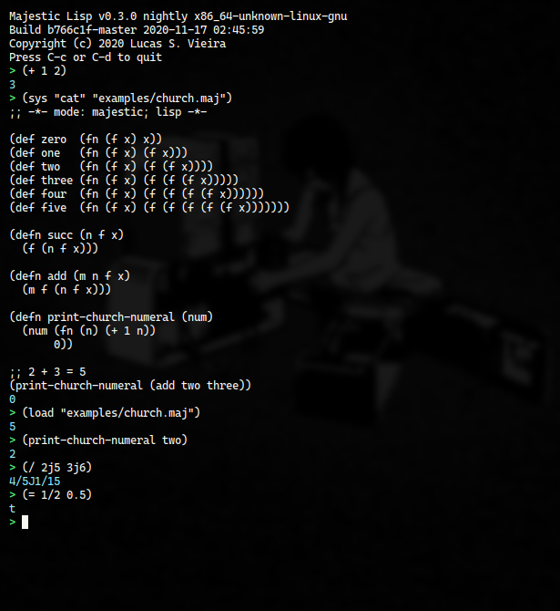

Figura 1: REPL de Majestic Lisp, em pleno funcionamento.
Estamos em mais uma reta final de um ano que vai deixar sua marca na história. E certamente esse ano vai também deixar sua marca em mim. Sinto isso quando medito sobre tudo o que fiz e sobre o que deixei de fazer nele.
Dentre as coisas boas que vigoram como produto do distanciamento social e do período conturbado de aulas via Internet, fulgura o desenvolvimento da linguagem que venho criando: Majestic Lisp. Já fiz alguns posts sobre alguns de seus conceitos iniciais e também sobre conceitos que possam ser considerados mais avançados, principalmente entre aqueles que não estão acostumados a dialetos de Lisp.
Majestic está de vento em popa. Atualmente em sua versão 0.3.0, com um parser de testes desde a versão 0.2.5, já possui argumentos de console, interpreta tanto entradas escritas no REPL quanto carrega arquivos de código, e é capaz de realizar computações mais robustas – sobretudo aritmética básica, que me deu um trabalho dos infernos por conta dos quatro subtipos numéricos (inteiros, floats, frações e complexos, que não são nada triviais).
Hoje, pretendo fazer algo ligeiramente diferente. Vou falar novamente
da ideia do bootstrap do macro let através de aplicação de uma função
anônima. Adicionalmente, discuto também como tornar o let
implementável em um macro independente, o que nos leva a uma
implicação inesperada que, na verdade, tornou-se uma pedra no meu
sapato e algo digno de pesquisa aprofundada…
Recapitulando: Contexto léxico
Como dito no post anterior, uma declaração local de variáveis envolve a criação de um contexto léxico onde uma variável seja válida e, portanto, tenha também um "tempo de vida". Na prática, em Majestic Lisp, apenas funções poderiam realizar tal façanha.
> ((fn (y x) (+ x y)) 3 2) 5
É importante lembrar que aqui estamos lidando com um contexto de
interpretação. Em outras palavras, estamos deliberadamente ignorando
qualquer consideração a respeito de compilação de uma expressão como
essa, ou mesmo do let, que pretendemos implementar1.
Na situação acima, a operação (+ x y) é executada em um contexto onde
x e y são bem-definidos. Assim como na lógica de primeira-ordem, fn
(em outros Lisps, geralmente representado como lambda, ou pela letra
grega homônima) é um quantificador para y e x. Em outras palavras,
fn garante que y e x tenham valores atribuídos a si quando o corpo da
função anônima for executado.
Em um breve paralelo com a lógica de primeira-ordem, podemos tomar o quantificador existencial como exemplo. Veja que possíveis valores para \(x\) passam a ser bem-definidos quando qualificamos que procuramos \(x\) no conjunto dos números naturais; a semântica é completamente diferente, todavia, o princípio de tornar \(x\) bem-definido é o mesmo.
\[ \exists x \in \mathbb{N}\,:\,(x < 2) \]
let it be fn'bda
Para que a definição de um contexto léxico seja mais palatável que declarar uma função anônima, criamos um macro: uma regra sintática que, antes da interpretação, transforma-se em outra expressão. Vejamos:
> (let ((x 2)
(y 3))
(+ x y))
5
A expressão acima expande-se perfeitamente para o exemplo anterior,
que envolvia uma função anônima. O algoritmo de expansão de let
envolve alguns passos, que enumero e exemplifico a seguir.
1. Separe os pares de definições de variáveis do let em duas listas de
símbolos e de valores.
A expressão
((x 2) (y 3))
torna-se:
((y x) (3 2))
O fato de as listas estarem "invertidas" é algo meramente arbitrário,
e não influencia no resultado final. Essa inversão, porém, é
conveniente, dado que a natureza de construção de uma lista envolve o
uso da operação cons que, na prática, adiciona um novo elemento ao
início de uma lista2.
2. Construa uma função anônima, tal que sua lambda-list3 seja a
lista de símbolos anteriormente gerada, e o corpo seja o corpo
apresentado em let.
Assim, teremos a função anônima:
(fn (y x) (+ x y))
3. Crie uma lista que, sintaticamente, demonstre a aplicação dessa função anônima à lista de valores anteriormente criada.
Aqui, temos duas opções. Podemos usar a forma especial apply…
(apply (fn (y x) (+ x y)) (list 2 3))
…ou, já que vamos emitir diretamente uma sintaxe de aplicação, podemos cortar caminho e falar diretamente na aplicação da função sobre apenas os elementos da lista de valores. Com as excusas da má-indentação em prol do didatismo, teremos:
( (fn (y x) (+ x y)) ; função aplicada 3 2 ; argumentos passados )
Inserir apenas os elementos de uma lista em outra lista envolve o uso
de uma operação comumente chamada splicing, que pode ser efetuada em
um quasiquote através de um unquote-splice (que erroneamente chamei no
post anterior de unquote-list, mas que já corrigi na especificação de
Majestic). unquote-splice geralmente é sinalizado pelo token ,@.
`((fn ,symbol-list ,body) ,@values-list)
Escrevendo o macro
Se considerarmos uma função sep-let-pairs que realize o trabalho de
separar as listas anteriormente citadas, é simples declararmos o macro
let:
(defmac let (args body) (let ((lists (sep-let-pairs args nil nil))) (let ((symbol-list (first lists)) (values-list (second lists))) `((fn ,symbol-list ,body) ,@values-list))))
Só tem um probleminha: nesse ponto, nossa linguagem ainda não tem o
macro let! Isso significa que estamos tentando declarar variáveis
locais, com um vocabulário que nem ao menos temos ainda!
Driblando o uso recursivo de let
Podemos driblar esse problema através do próprio recurso que estamos
explorando: uma aplicação de função. Para coletarmos o retorno de
sep-let-pairs e armazenarmos em lists, usamos um let; basta
então expandirmos manualmente esse let.
(defmac let (args body) ((fn (lists) (let ((symbol-list (first lists)) (values-list (second lists))) `((fn ,symbol-list ,body) ,@values-list))) (sep-let-pairs args nil nil)))
Acima, explicitamente criamos uma função que recebe um parâmetro
lists, e englobamos o restante do macro usando essa função (o let
remanescente pode ser removido com um truque que logo veremos).
A função é então aplicada ao retorno do uso da função sep-let-pairs,
como esperado.
Trocando let por desestruturação de listas
Nosso problema foi parcialmente resolvido, exceto pelo segundo let que
é responsável por desestruturar lists em dois elementos independentes.
Aqui, temos um recurso exclusivo de Majestic que pode ser explorado: listas podem ser desestruturadas logo na aplicação da função. Por exemplo, em uma aplicação como essa:
((fn (nums) (+ (first nums) (second nums))) '(2 3))
…como a variável nums não será reutilizada, podemos utilizar a
própria lambda-list da função para determinar que esperamos por uma
lista de dois elementos como argumento, e estes elementos serão
nomeados separadamente:
((fn ((fst snd)) (+ fst snd)) '(2 3))
Aplicando essa ideia à definição do let, podemos delegar a
desestruturação à própria função que recebe lists como parâmetro,
substituindo essa variável pela sintaxe de desestruturação de listas
esperada:
(defmac let (args body) ((fn ((symbol-list values-list)) `((fn ,symbol-list ,body) ,@values-list)) (sep-let-pairs args nil nil)))
Assim, temos uma implementação do macro let que independe do próprio
uso de let.
Abusando da desestruturação
Como uma nota avulsa, o fato de let usar uma função anônima implica
que o próprio let pode ser usado para desestruturar funções. Isso
pode ser particularmente útil para evitar abusos de sintaxe concreta.
Se considerarmos o exemplo anterior, escrito através do próprio macro
let que estamos definindo:
(let ((nums '(2 3))) (+ (first nums) (second nums)))
…poderemos simplificar essa expressão através de mera desestruturação:
(let (((fst snd) '(2 3))) (+ fst snd))
Nesse caso, ainda que o uso excessivo de parênteses comece a ficar
confuso, veja que o uso de sintaxe concreta (car / cdr / cadr e seus
aliases first / rest / second) acaba se reduzindo consideravelmente.
let, o auto-contido
Nosso macro já possui muita utilidade e, de fato, foi a implementação que utilizei por um bom tempo em Majestic Lisp.
Só temos um problema: sep-let-pairs precisaria ser definido antes que
let seja. Todavia, sep-let-pairs não é uma função-padrão da linguagem
Majestic Lisp. Vejamos uma de suas possíveis implementações a seguir.
(defn sep-let-pairs (pairs syms vals) (if (nilp pairs) (list syms vals) (sep-let-pairs (cdr pairs) (cons (caar pairs) syms) (cons (car (cdar pairs)) vals))))
Ainda que eu pudesse forçar essa função na especificação (ou pelo menos, na implementação da linguagem), pareceria que estamos lidando com uma "ponta solta", um utilitário que "precisa" existir, mas que nunca foi especificado – ainda que a especificação nada tivesse a ver com a implementação.
Eu precisava de uma solução auto-contida, portátil; uma única
expressão que pudesse ser copiada e colada, e que definisse let sem
nenhuma dependência extra.
sep-let-pairs, a função local
Felizmente, nosso problema pode ser resolvido através da mesma técnica
que nos permitiu receber o retorno de sep-let-pairs, e desestruturá-lo
em syms e vals: criar uma aplicação de função ad-hoc para definir um
valor local.
Vale lembrar que funções anônimas são valores como quaisquer outros
aqui, e que podem ser repassados a qualquer função. Nesse caso, o
valor local seria a própria função discutida, que chamaremos nos
argumentos de sepfn por comodidade.
(defmac let (args body) ((fn (sepfn) ((fn ((syms vals)) `((fn ,syms ,body) ,@vals)) (sepfn args nil nil))) (fn (pairs syms vals) (if (nilp pairs) (list syms vals) (sepfn (cdr pairs) (cons (caar pairs) syms) (cons (car (cdar pairs)) vals))))))
Até aqui, tudo bem; o interpretador de Majestic, que atualmente não realiza checagens até o momento de expansão do macro, aceita essa definição normalmente.
Vejamos o que acontece agora quando tentamos usar o macro let…
> (let ((a 1)
(b 2))
(+ a b))
Error: sepfn is unbound
Ops! Alguma das chamadas a sepfn está incorreta.
O problema do contexto léxico
Se analisarmos bem o código, veremos que o problema não pode ser a
chamada que resulta na desestruturação da lista em syms e vals: ali,
sepfn é bem-definida, sendo a função recebida por parâmetro –
portanto, quantificada por fn.
O único lugar em que sepfn não é conhecida… é na sua própria
definição! Isso pode não ser tão trivial, mas analisemos portanto
apenas a definição da função anônima ao qual o nome sepfn foi
atribuído.
(fn (pairs syms vals) (if (nilp pairs) (list syms vals) (sepfn (cdr pairs) (cons (caar pairs) syms) (cons (car (cdar pairs)) vals))))
Aqui, temos uma chamada explícita a sepfn no corpo da
função. Todavia, por causa da forma como as funções funcionam em
Majestic Lisp, não se sabe aqui o que é sepfn.
O primeiro motivo para tal é óbvio: na definição da função, não há
nada que delimite o que é sepfn. Todavia, se sepfn houvesse sido
definida antes de existir (paradoxal, não?), em um contexto léxico que
a englobasse, tal contexto seria capturado pela função anônima, e aí
sim ela saberia quem é.
"Mas Lucas, quando eu invoco sepfn no macro logo acima, a execução
dessa função não deveria compreender que trata-se dela mesma?"
Bem… infelizmente, não. O corpo de uma função é sempre executado
levando em consideração o contexto léxico que captura e o contexto
global, nessa ordem. Quando uma função é definida globalmente (via
defn), o contexto global é modificado, portanto ela acaba sendo capaz
de encontrar a si mesma. Todavia, quando a função foi definida
localmente, ela é incapaz de encontrar a si mesma, pois só realiza
consultas em seu próprio escopo léxico capturado, e não no escopo em
que foi invocada4.
Isso implica em uma conclusão muito importante…
Recursão em funções locais?
A conclusão é esta: levando em consideração apenas o escopo léxico e o
global de Majestic Lisp, torna-se claro que funções anônimas não podem
ser recursivas. Isso pode ser problemático ou aceitável, dependendo do
programador. De qualquer forma, nos atrasa um pouco na definição do
let auto-contido.
Por sorte, ainda podemos driblar esse problema. Se a função não
conhece a si mesma, basta que a recebamos como parâmetro. Assim, uma
chamada a sepfn também fica responsável por repassar sepfn a si mesma
como parâmetro.
A implementação final do let auto-contido termina dessa forma:
(defmac let (args body) ((fn (sepfn) ((fn ((syms vals)) `((fn ,syms ,body) ,@vals)) (sepfn args nil nil sepfn))) (fn (pairs syms vals recur) (if (nilp pairs) (list syms vals) (recur (cdr pairs) (cons (caar pairs) syms) (cons (car (cdar pairs)) vals) recur)))))
Repare que a única chamada a sepfn repassa sepfn como último
parâmetro. Adicionalmente, a definição da função anônima recebe uma
referência a si mesma sob o nome recur, que é reutilizado dentro de
si.
O uso do símbolo recur aqui é algo proposital; algumas linguagens
possuem esse símbolo como palavra-chave para resolver justamente
situações desse tipo. Este é o caso em linguagens como Clojure e
também nos MLs (OCaml, Standard ML…).
Conclusão e possíveis soluções
Esse foi o post de hoje, que termina com uma solução e, ao mesmo tempo, com uma indagação; esse problema não é de resolução trivial, ao menos não em uma linguagem que possui apenas escopos global e léxico.
Existem soluções plausíveis para esse problema. A primeira das soluções é ter algum tipo de mutabilidade nos escopos léxicos capturados pelas funções, de forma que pudéssemos extender um escopo com uma referência à própria função, e então reinserir esse escopo na própria definição da função.
Mas isso pressupõe algum tipo de mutabilidade nas células cons da
linguagem, algo que pretendo adiar por enquanto, já que Majestic ainda
não tem mutabilidade explícita. Ademais, isso envolveria uma
mutabilidade "por baixo dos panos" que só resolveria o problema para
um contexto léxico apenas, fazendo com que a função não possa ter
chamada recursiva caso seu nome fosse "trocado" – o que poderia
invocar a necessidade de tornar recur um símbolo especial na
linguagem, etc…
Uma ideia um pouco mais amigável é introduzir contexto dinâmico na
linguagem, algo que não me agrada muito, mas que poderia ser uma
solução. Após consultar o contexto léxico por sepfn e não encontrar
correspondência, e antes de passar a uma consulta ao contexto global,
Majestic poderia realizar uma consulta a um contexto dinâmico, quando
existente. Assim, trocaríamos a função que define sepfn localmente por
uma estrutura que definisse sepfn dinamicamente; nesse caso, durante a
execução de sepfn, esta função conseguiria encontrar a si mesma no
contexto onde fora invocada, estando portanto definida dinamicamente.
Ambas as opções são válidas, mas demandam certo cuidado. Common Lisp
possui a estrutura flet que pode ser utilizada para definir funções
locais (similar a letfn de Majestic Lisp, que comentarei outra hora),
mas que sofre do mesmo problema com recursividade; por isso, caso as
funções precisem ser recursivas, recomenda-se o uso da estrutura
labels. Pela forma como as coisas estão, acredito que revisar
implementações dessas construções seja um bom ponto de partida.
Post-scriptum: letrec
Após trocar algumas ideias com alguns amigos, acabei chegando hoje
(19/11/2020) a uma solução prática para o problema: letrec, uma forma
especial capaz de definir funções que não apenas podem ser recursivas,
mas que também podem chamar-se em recursão mútua.
letrec toma seu nome emprestado de dialetos como Scheme e Racket, e
funciona como letrec nessas linguagens, ou similar a labels em Common
Lisp.
letrec é um special form porque, diferente de let, let*, letfn e
letfn*, esta precisa modificar a forma como expressões são
interpretadas, mais especificamente modificando o que cada função ali
declarada compreende como sendo seu próprio contexto capturado.
Não expliquei aqui nada sobre letfn e letfn* mas, basicamente, são
sintaxes especiais de let e let* para que possamos definir funções
locais de um jeito mais confortável.
Em termos de implementação, letrec gera cada uma das funções ali
descritas, com a captura de escopo esperada. Em seguida, injeta um
contexto léxico nas respectivas funções, onde todas elas sejam
conhecidas, mantendo ainda o contexto capturado durante a
interpretação das mesmas.
Compartilho na íntegra a descrição dessas funções nos apêndices do livro de Majestic Lisp, atualmente em escrita:
(letrec bindings body)Define uma lista de funções que serão bem-definidas durante a execução da expressão
body.
bindingsé uma lista de definições de funções similares adefn, todavia sem o símbolodefnem seu início.letrecsegue as mesmas regras sintáticas deletfneletfn*.O funcionamento de
letrecaproxima-se muito do uso prático deletfneletfn*. Todavia,letrecpermite a declaração de funções mutuamente recursivas. Para tanto, cada função ali declarada não apenas captura o contexto em queletrecé utilizado, como também deve capturar o próprio contexto criado porletrecapós a definição de todas as suas funções.Como esse tipo de operação exige modificar a forma como funções são declaradas – mais precisamente, modificar a forma como ocorre a captura de contexto –,
letrecprecisa ser uma forma especial, diferente deletfnelet, que podem ser declarados como macros.
> (letrec ((foo ()
(do (print "Calling foo")
(bar)))
(bar ()
(do (print "Calling bar")
(baz)))
(baz ()
(print "Calling baz")))
(foo))
Calling foo
Calling bar
Calling baz
nil
> (letrec ((iter (x)
(if (> x 0)
(do (print "Recursion #{}" x)
(iter (- x 1)))
(print "Finished"))))
(iter 5))
Recursion #5
Recursion #4
Recursion #3
Recursion #2
Recursion #1
Finished
nil
Notas de Rodapé:
Para maiores informações, veja o livro Let Over Lambda, de Hoyte, C. (2008).
Ou: cria um par de elementos, tal que o segundo elemento é a lista original, e o primeiro, o que se quer colocar na mesma.
Lista de argumentos da função anônima. Convenciona-se falar de
lambda-list devido ao quantificador lambda anteriormente citado.
Para que isso fosse possível, o escopo de chamada teria que ser um escopo dinâmico, isto é, um escopo que delimite um contexto dinâmico. Mas não abordaremos isso aqui em profundidade, só mencionarei como isso soluciona o problema ao final do artigo.